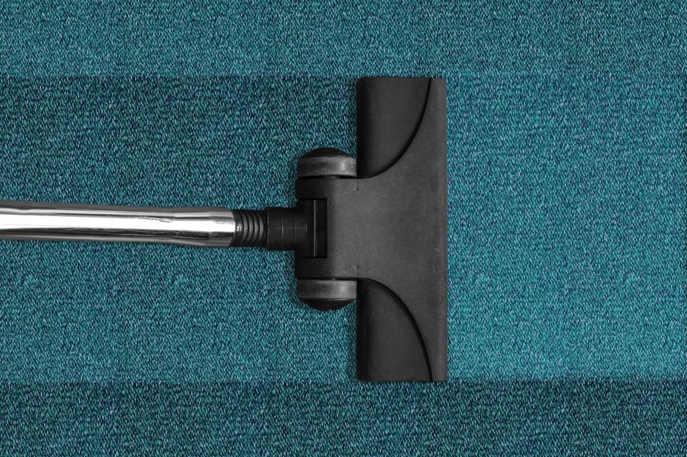

Silivri Temizlik Koltuk Yıkama [Buharlı]
Koltuk, yatak ve halı yıkama; Silivri'de, buharla.
Mimar Sinan Mahallesi, Melek Sokak'tayız. Ne yıkatmak istediğinizi yazın; eşyanıza, kumaşına ve lekesine göre nasıl ilerleyeceğimizi birlikte netleştirelim.
Ne yıkatmak istiyorsunuz?
Sayıları seçin, mesajı biz hazırlayalım. Gönder düğmesi WhatsApp'ı açar; mesaj siz göndermeden kimseye ulaşmaz, isterseniz orada değiştirebilirsiniz.
Koltuk takımı
Üçlü, ikili, tekli ya da köşeYatak
Tek ya da çift kişilikHalı
Oda halısı, yolluk, paspasMesaj önizlemesi
Kumaş türü, leke, halı ölçüsü ya da uygun gün eklemek isterseniz ayrıntılı talep sayfasına geçin; seçtiğiniz sayılar oraya taşınır. WhatsApp kullanmıyorsanız 0542 727 57 28 numarasını arayın.
Evdeki kumaşlar, kartela kartela
Koltuk takımından yemek sandalyesinin oturağına kadar, kumaşlı eşyaların hepsini burada topladık. Bir kartelaya dokunun, o hizmetin ayrıntısına gidin.
Buhar kumaşta ne yapar?
Çizim, bir kumaşın liflerini yakından gösteriyor; aşamalar kendiliğinden değişir, isterseniz düğmelerle siz seçin. Buharlı yıkamada genel ilke şudur:
- Isı yumuşatır
Sıcaklık, liflere yapışmış yağlı kiri yumuşatır; yağ çözülünce ona tutunan toz da gevşer.
- Nem ayırır
Nem, kirin lifle bağını zayıflatır ve kiri taşınabilir hâle getirir.
- Vakum toplar
Gevşeyen kir ve suyun büyük kısmı vakumla geri çekilir; kalan nem havayla kurur.
Genel bir anlatımdır; uygulama kumaşa ve lekeye göre değişir.
Adım adım nasıl çalışır
Halıyı da unutmayın
Oda halısı, yolluk ya da kapı önü paspası: hepsi aynı sayacın içinde. Halınızın türünü (makine halısı, yün, shaggy, viskon) ve yaklaşık ölçüsünü yazarsanız size daha net bilgi verebiliriz.
Ölçü nasıl alınır? Halının kısa ve uzun kenarını saçaklar hariç santimetre olarak ölçün. Talep sayfasındaki hesaplayıcı metrekareyi sizin için bulur.
Adresten alım ve teslim için bölgenizi yazın, durumu söyleyelim.
Halı için talep oluşturLeke oldu: ilk anda ne yapmalı?
Lekeye ilk dakikalarda yapılan müdahale, sonradan ne kadar kolay çıkacağını çok etkiler. Leke türü ne olursa olsun geçerli üç kural:
- Ovmayın, tamponlayınTemiz ve beyaz bir bez ya da kâğıt havluyla bastırarak emdirin. Ovmak lekeyi yayar, lifleri yıpratır.
- Kenardan içe doğruLekenin dışından ortasına doğru çalışın; böylece leke halka gibi büyümez.
- Sıcak su ve çamaşır suyu yokSıcak su bazı lekeleri kumaşa sabitler; çamaşır suyu ise rengi kalıcı olarak açabilir.
Önce görünmeyen yerde deneyin. Evde kullanacağınız her ürünü önce koltuğun arkası ya da alt kenarı gibi göze batmayan bir noktada deneyin; renk akarsa ya da kumaş değişirse durun.
Silivri, Mimar Sinan'da
Bize telefonla, WhatsApp'tan ya da Instagram'dan ulaşabilirsiniz. Mesajınıza eşyanızın birkaç fotoğrafını eklerseniz konuşma çok daha hızlı ilerler.
- AdresMimar Sinan, Melek Sk. No:15, 34570 Silivri/İstanbul
- Çalışma saatleriHer gün 24 saat açık
- Telefon0542 727 57 28
- Instagram@temizliksilivri
Sık sorulanlar
Fiyat ne kadar?
Fiyat; eşyanın türüne, sayısına, ölçüsüne ve kirlilik durumuna göre değişir. Ne yıkatmak istediğinizi ve mümkünse fotoğraflarını WhatsApp'tan gönderin, bilgi verelim.
Ne kadar sürede teslim edersiniz?
Eşyaya ve yoğunluğa göre değişir. WhatsApp'tan sorduğunuzda size net bir gün söyleriz.
Adresten alıyor musunuz?
Bölgenize göre değişiyor. Adresinizi ya da mahallenizi yazın, alım ve teslim konusunu birlikte netleştirelim.
Yıkanan koltuk ne zaman kurur?
Kumaşa, sünger kalınlığına, odanın havalanmasına ve havaya göre değişir; tek bir süre söylemek doğru olmaz. Kurumayı etkileyen koşulları Nasıl çalışır sayfasında anlattık.